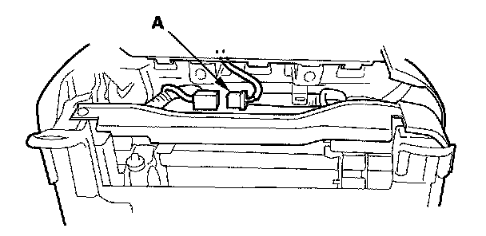

Front Seat Cushion Cover
Front Seat Cushion Cover ReplacementSpecial Tools Required
KTC trim tool set SOJATP2014 *
* Available through the American Honda Tool and Equipment Program
SRS components are located in this area. Review the SRS component locations and the precautions and procedures before doing repairs or service.
- Check the operation of the driver's seat position sensor after any of these actions
- Driver's seat position sensor replacement
- Cover plate (front side of driver's seat slide rail) replacement
- Calibrate the ODS unit after any of the these actions
- Front passenger's seat replacement (including any seat components)
- Replacement of the seat weight sensors
- After a vehicle collision
NOTE:
- Put on gloves to protect your hands.
- Use the appropriate tool from the KTC trim tool set to avoid damage when removing components.
- Take care not to tear the seams of damage the seat covers.
1. Remove the front seat.
2. Remove the seat-back.

3. From under the seat cushion, disconnect the seat cushion heater connector (A).
4. Remove the clips and wire tie (A) and release the hook strips (B) from both sides of the seat cushion.
5. From under the seat cushion, release the hook strips (A), and pull back the seat cushion cover (B).
6. Remove the silencer (A) and seat cushion pad (B) from the seat cushion frame (C).
7. Pull back the edge of the seat cushion cover all the way around, and release the clips (A), then remove the seat cushion cover.
8. Install the cover in the reverse order of removal, and note these items:
- To prevent wrinkles when installing a seat cushion cover, make sure the material is stretched evenly over the pad before securing the clips and hook strips.
- Replace any clips you removed with new ones (A). Install them with commercially available upholstery ring pliers (B).